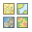

Ornithological tourism in Monfragüe
Ornithological tourism in Monfragüe
Ornithological tourism in Monfragüe
|
|
|

|
|
Draw a line and create a topographic profile
Draw an observation point and create a viewshed
Draw an observation point and see the nearest parkings

Creating profile, please wait
Choose route:
Search bar
Base Maps
Geoprocessings
Print the current view on the map
Select a bird from the dropdown and click the button to see the table
Bookmarks